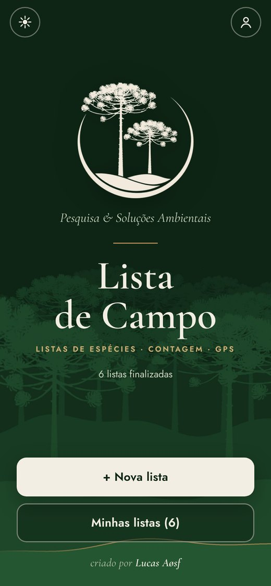
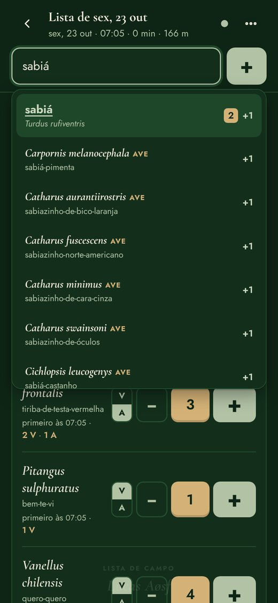
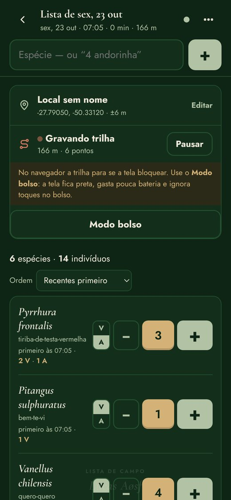
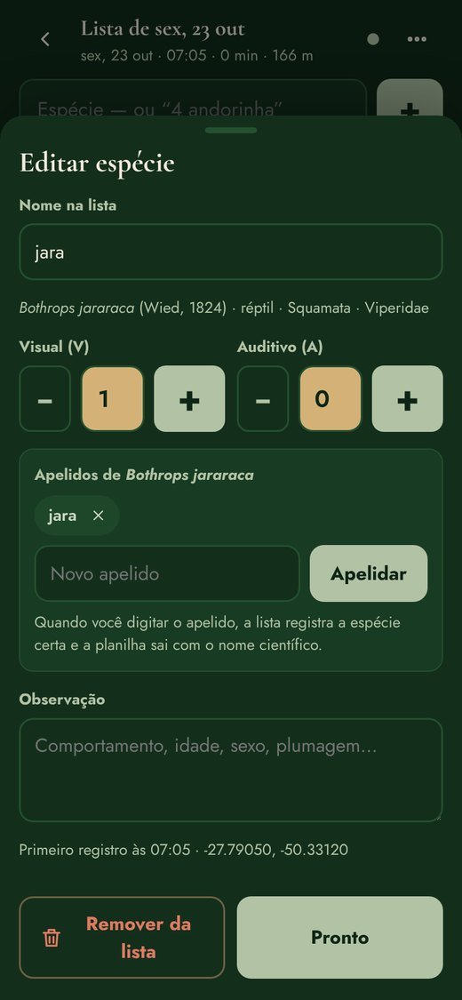
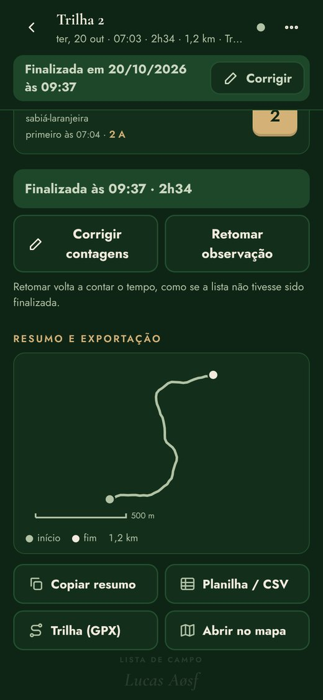
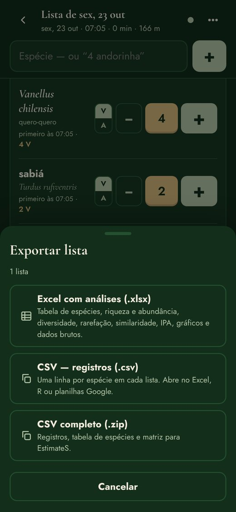
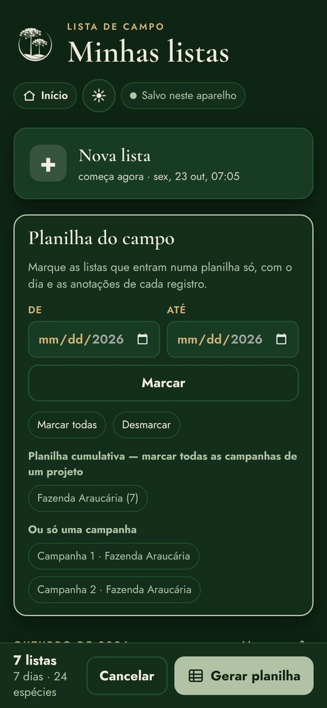
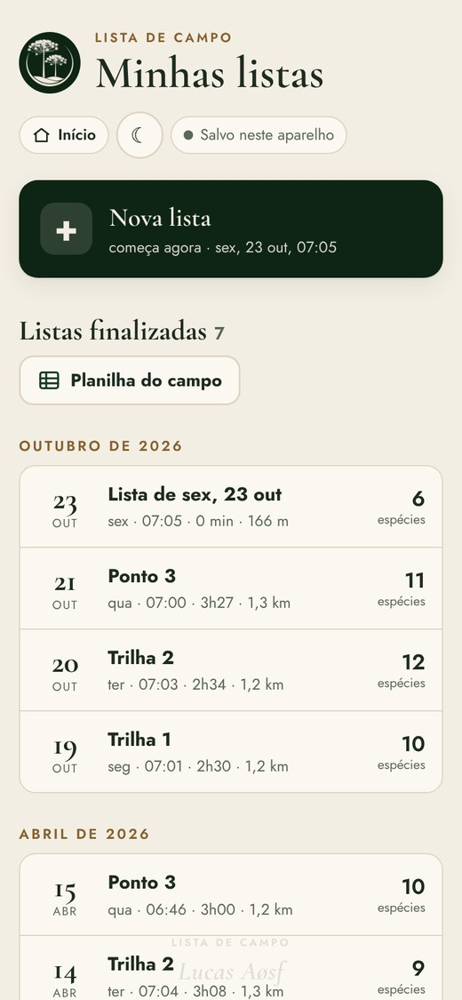
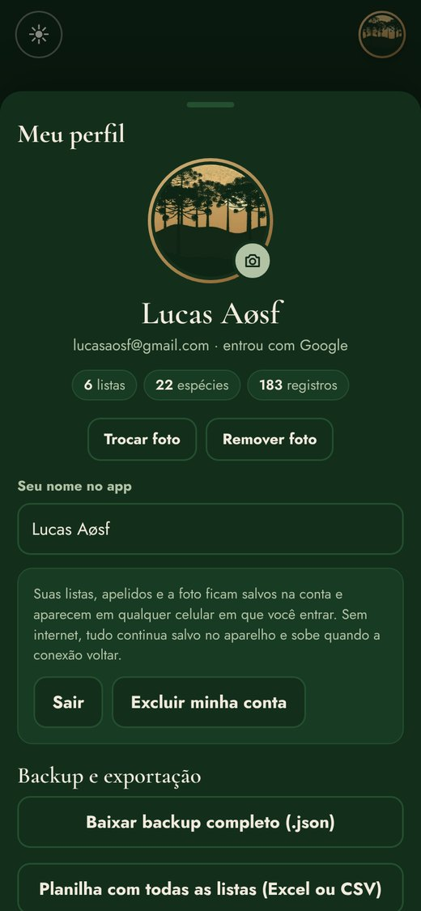
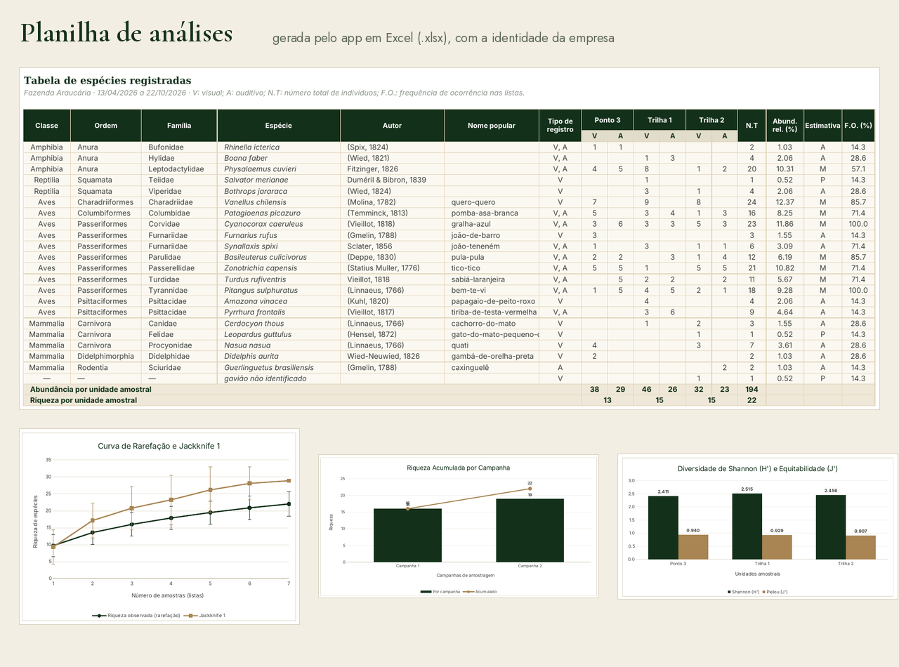

Pesquisa & Soluções Ambientais
Lista de Campo
Listas de espécies para o trabalho de campo: nomes do seu jeito, contagem com − e +, registro visual ou auditivo, trilha GPS e planilha de análises pronta ao final do campo.
Vídeo narrado de 3 minutos
Com voz e legenda explicando cada parte. Toque num capítulo para pular direto.
Passo a passo









A planilha de análises
Tabela de espécies com autor em coluna separada, nome popular, V/A, abundância relativa, frequência de ocorrência e as informações das listas oficiais (ameaça, endemismo, biomas…), além de riqueza acumulada, diversidade, rarefação, estimadores, similaridade e IPA, com gráficos.

Como instalar
Android
- Abra o app no Chrome.
- Toque em Instalar app (ou ⋮ → Adicionar à tela inicial).
- Abra sempre pelo ícone Lista de Campo.
iPhone
- Abra o app no Safari.
- Toque em Compartilhar → Adicionar à Tela de Início.
- Abra sempre pelo ícone Lista de Campo.
Sem internet
Depois de aberto uma vez, o app funciona offline. As listas ficam salvas no celular e, se você entrar na conta, também na nuvem. Sem conta, faça um backup de vez em quando em Conta e backup.